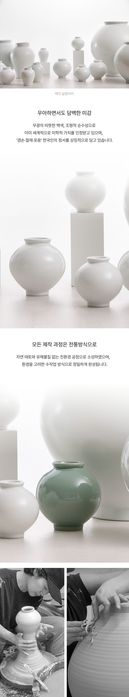
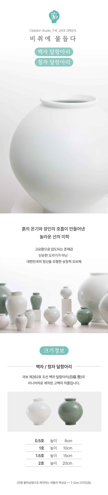
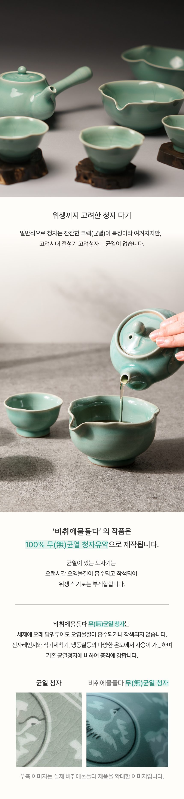
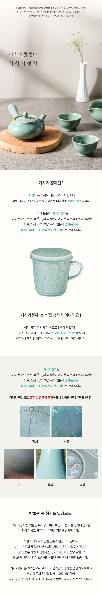

백자 · 청자 달항아리
국보 제262호 조선 백자 달항아리(白磁壺)의 미니어처로 제작한 작품입니다. 흙의 온기와 장인의 호흡이 만들어낸 선의 미학 — 무광의 따뜻한 백색과 비취빛 두 가지로 만나보세요.
전통 물레성형 · 자연 태토 · 친환경 공정 수작업 (크기 ±1~2cm 오차)
0.5호 · H8~9cm1호 · H10~12cm1.5호~4호 · 별도문의
소품 · 리빙 컬렉션 — 동일가 55,000원(부가세 포함) · 국영문 보증서 동봉
백자 달항아리0.5호(H8~9cm) · 1호(H10~12cm)
55,000원부가세 포함
청자 달항아리0.5호(H8~9cm) · 1호(H10~12cm)
55,000원부가세 포함
상감청자 운학문 매병단품 · 국영문 보증서 동봉 가능
55,000원부가세 포함
상감청자 운학문 주병단품 · 국영문 보증서 동봉 가능
55,000원부가세 포함
청자 와인잔 「운학잔」A · B타입
55,000원부가세 포함
운학문 실크 스카프 · 넥타이각 낱개 구매 가능
각 55,000원부가세 포함
연잎형 청자 반상기 세트대접 4점 + 크라프트 상자 + 남색 비단 보자기 + 작품보증서
140,000원부가세 별도 (포함 154,000원)
연잎형 청자 다기 세트구성·가격 별도 문의
문의
고려청자 운학문 · 국화문 책갈피자석책갈피 · 각 4색 (25×65mm)
5,500원부가세 포함
청자 굿즈 에코백니트 손목가방 2종
10,000원부가세 포함
상세 안내 이미지 펼쳐보기 — 달항아리 상세 · 크기 · 무균열 · 거시기 청자



